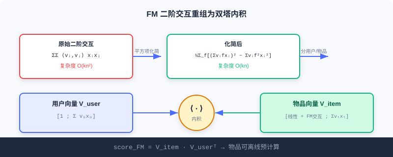

双塔模型 (U2I)
📝 Before You Continue: 请先读完 2.1 的矩阵分解与 2.2 的 Item2Vec。本章把「内积」思想从物品-物品升级为用户-物品，并用深度网络编码两侧表示，是工业 U2I 召回的主干。
前三节你学到的物品向量（Item2Vec / EGES）做的是 I2I 召回——先有种子物品，再找相似物。但线上召回的起点往往不是「物品」而是「用户」：给定一位用户，直接从亿级物品库里捞出他可能感兴趣的。这就需要用户表示与物品表示在同一空间里各自编码，再用内积检索——这就是双塔模型（Two-Tower）。
它的工程魅力在于「分而治之」：物品侧塔可以离线预计算并存入近邻索引（ANN），用户侧塔实时计算，线上只需一次向量检索。从 FM 的数学雏形，到 DSSM 的深度编码，再到 YouTubeDNN 的「预测下一个观看」，本章带你走完双塔的演进，并用交互演示直观感受检索过程。
读完本章，你将能够：
- 推导 FM 二阶交互项从 到 的化简，并说明它如何重组为双塔内积
- 解释 DSSM 的极端多分类训练、向量归一化与温度系数的作用
- 描述 YouTubeDNN 的「非对称双塔」与「时序分割」等工程技巧
- 用交互演示理解双塔召回的「离线建库 / 实时查用户」流程
- 完成 5 道分层练习题，巩固双塔的表示与检索
2.3.0 为什么需要双塔：从 I2I 到 U2I
I2I 召回依赖「用户已交互过某物品」作种子。但很多场景下，用户刚注册、或我们要在他还没动作时就推内容。U2I 直接以用户自身（画像 + 行为）为查询，从全库检索候选：
双塔的核心约定是：两侧塔在训练时几乎不交互，只在最后一步算内积。这换来了宝贵的工程性质——物品向量可离线一次性算好入库，用户向量在线现算，检索成本极低。
2.3.1 FM（因子分解机）：双塔模型的雏形
FM 诞生于深度学习之前，却在思想上预示了双塔。它把用户-物品复杂交互优雅分解为两个低维向量的内积。完整表达式：
每个特征 对应 维隐向量 ，交互通过内积 建模。
计算复杂度化简
原本 的二阶项可重写为：
复杂度从 降到 ，使 FM 能处理大规模稀疏数据。
🧠 Mental Model: 拼积木的隐向量
把每个特征想成一块积木，每块积木藏着一根小指针（隐向量）。两个特征是否「合得来」，不看积木本身，只看两根指针指的方向是否一致（内积大=合得来）。FM 的妙处是：不用真的两两试遍，靠「指针平方和减平方平方和」一次算完所有配对。
分解为双塔结构
召回场景下，特征分两类：用户侧 与物品侧 。为同一用户推荐不同物品时，用户特征内部的交互得分对所有候选相同，排序时可忽略。只保留：物品内部交互 + 用户-物品交互。重排后：
观察最后一项——它恰是两个向量的内积 与 。于是：
- 用户向量：
- 物品向量：

Analysis: FM 用线性代数把特征交叉转为双塔内积，物品向量可离线预计算，是双塔思想的理论雏形；但它是线性模型，对复杂非线性用户-物品关系表达力有限——这正是 DSSM 用深度网络接棒的原因。
2.3.2 DSSM：深度结构化语义模型
DSSM 用深度神经网络替代 FM 的线性变换，把用户与物品映射到共同语义空间，相似度由向量间距离衡量。
推荐中的双塔架构
DSSM 含独立的两个 DNN 塔：用户塔处理用户特征（行为、人口统计），输出用户 Embedding；物品塔处理物品特征（ID、类目、属性），输出物品 Embedding。两塔 Embedding 维度必须一致。相比 FM 的线性组合，DSSM 让两侧特征各自在塔内做复杂非线性变换，两塔交互仅发生在最终内积。物品向量离线预计算、用户向量实时计算，经 ANN 完成召回。
多分类训练范式
DSSM 把召回视为极端多分类：物料库所有物品都是类别，目标是最大化用户对正样本的预测概率：
是整个物料库。因库过大，实际用负采样近似。
双塔的关键细节
向量归一化：对两侧 Embedding 做 L2 归一化 。原始点积不满足三角不等式，会致「距离」不一致。归一化后点积等价于欧式距离：
关键是训练与检索的一致性——训练用的（归一化点积）与线上 ANN 用的（欧式距离）本质等价，避免训练-服务不一致。
温度系数调节：归一化内积再除以 ：
放大相似度差异（更「确定」）， 使分布更平滑（更保守）。它本质是缩放 logits、改变 Softmax 输出形状。
Analysis: DSSM 的表达力来自深度非线性，工程优势来自「离线物品塔 + 在线用户塔」。归一化与温度是上线必调的两个旋钮——前者保证检索一致性，后者控制召回的「集中度」。代价是双塔「晚期交互」损失了部分细粒度特征交叉信号。
2.3.3 YouTubeDNN：从匹配到预测用户下一行为
YouTubeDNN 是双塔演进的里程碑。它延续双塔，但引入关键转变：把召回定义为「预测用户下一个会观看的视频」，类似 NLP 的 next-token 预测。
非对称双塔架构
用户塔集成观看历史、搜索历史、人口统计等多模态信息，视频 ID 经嵌入后平均池化聚合，并引入 Example Age 特征建模内容新鲜度；物品塔则相对简化——本质是一个巨大嵌入矩阵，每视频一个可学向量，避免复杂物品特征工程。目标为极端多分类：
因视频库庞大，用 Sampled Softmax 高效训练。
关键的工程技巧
- 非对称的时序分割：不用随机验证，而用「回滚」——预测目标只看其之前的历史，避免未来信息泄露（符合真实推荐场景，剧集按顺序看）。
- 负采样策略：重要性采样，每次只对数千负样本计算，提速 100 多倍。
- 用户样本均衡：每用户生成固定数量训练样本，避免高活跃用户主导学习，对长尾用户效果关键。
Analysis: YouTubeDNN 建立了「可扩展、可工程化」的双塔范式：训练用复杂多分类目标 + 丰富用户特征，服务时预计算物品向量、实时算用户向量、配 ANN 检索。非对称设计让物品塔保持简洁（易离线建库），用户塔可灵活扩展——这一平衡至今被广泛借鉴。
2.3.4 交互演示：双塔召回的检索过程
下面用交互演示感受双塔召回的核心流程：物品塔离线把所有物品编码进向量索引；线上来了一位用户，用户塔实时编码其向量，再用近邻检索从索引里捞出最相似的 Top-K 候选。点击「下一步」观察每一步。
注意第三步「检索」：它不遍历全库逐一算分，而是用 ANN 在近邻空间直接定位——这正是双塔能在毫秒级服务亿级物品的根本原因。归一化让内积等价于欧式距离，温度系数则控制检索的集中程度。
📊 Data Point: 在 funrec 评测集上，FM 召回 hit_rate@10≈0.047、DSSM≈0.016、YouTubeDNN≈0.013。数值差异主要来自数据集与特征配置，不代表模型优劣——DSSM/YouTubeDNN 在更丰富特征与更大规模上通常更优。
⚠️ Common Mistakes in 2.3
| # | Mistake | Example | Why It's Wrong | Fix |
|---|---|---|---|---|
| 1 | 双塔塔间过早交互 | 用户/物品特征早期 concat | 破坏「物品可离线预计算」性质 | 交互只发生在最终内积 |
| 2 | 忘做向量归一化 | 直接点积做 ANN 检索 | 点积非度量，训练-检索不一致 | 两侧 L2 归一化 |
| 3 | 温度系数乱设 | 默认 τ=1 不调 | 召回集中度失控，头部过聚 | 按业务调 τ 控制分布 |
| 4 | 把 FM 当深度模型 | 「FM 能拟合任意非线性」 | FM 是线性模型，交叉阶数固定 | 需非线性用 DSSM |
| 5 | YouTubeDNN 随机分割 | 验证集混入未来行为 | 未来信息泄露，离线指标虚高 | 用时序回滚分割 |
本章小结
📌 Key Takeaways
| Concept | Key Points | Why It Matters |
|---|---|---|
| FM 双塔雏形 | 二阶交互重排为 | 理论起点，物品可离线预计算 |
| DSSM | 深度双塔 + 极端多分类 + 归一化/温度 | 工业 U2I 主干，强表达+高效检索 |
| YouTubeDNN | 预测下一观看 + 非对称塔 + 时序分割 | 可扩展可工程化的范式 |
| 训练-检索一致 | 归一化点积 ≡ 欧式距离 | 避免线上线下不一致 |
❓ FAQ
Q1: 为什么双塔「晚期交互」反而是优点？
A: 因为物品向量可完全离线算好、建索引，线上只算用户向量 + 一次 ANN 检索。若塔间早期交互（如特征交叉），物品向量就依赖具体用户，无法预计算，失去规模化能力。
Q2: 温度系数 τ 调大调小分别有什么效果？
A: τ<1 放大相似度差异，模型更「自信」、召回更集中（易扎堆头部）；τ>1 平滑分布、更保守、候选更分散。是平衡精准与多样的旋钮。
Q3: FM 和 DSSM 都用内积，区别在哪？
A: FM 的向量由线性组合 + 固定隐向量得到（线性模型）；DSSM 的向量由深度网络非线性变换得到（表达力更强），且显式处理归一化与采样训练。
前后关联
- 2.4（序列召回） 把用户表示从「单一向量」升级为「多向量 / 长短期融合」，弥补双塔单向量丢时序的不足。
- 2.5（流式索引） 承接双塔产出的物品向量，组织成可实时更新的流式索引。
- 3.x（排序） 排序侧可用更复杂的「早期交互」模型（如特征交叉），与双塔晚期交互互补。
Practice Problems
Work through all problems in order — they get progressively harder. Each has a complete solution you can reveal after trying it yourself.
Problem 2.3.1 — FM 复杂度化简 🟢 Easy
FM 二阶交互项原始形式需对 个特征两两组合，复杂度为 。请写出化简后形式，并说明为何它只需 。
💡 Solution (click to reveal)
Approach: 回忆平方项展开。
答： 右边对每个隐维度 只需遍历一次特征 求和与平方和，再相减，共 个维度、 个特征 → ，而非 。
Key points:
- 关键技巧是把「两两乘积和」转为「和的平方减平方的和」。
- 这正是 FM 能上大规模稀疏数据的原因。
Problem 2.3.2 — 双塔内积重组 🟢 Easy
FM 召回中，用户特征内部交互对所有候选相同故可忽略。最终分数写成 。若用户向量 ，物品向量 ，求内积分（即匹配分）。
💡 Solution (click to reveal)
Approach: 对应分量相乘再求和。
Key points:
- 第一项常数 1 乘物品向量的偏置/线性部分，后两项是隐向量交互。
- 物品向量离线算好，线上只对用户现算并做一次内积。
Problem 2.3.3 — 归一化与距离 🟡 Medium
设未归一化向量 、、。用原始点积作为「相似度」判断谁离 A 更近（dist=点积越大越近）。再对三者 L2 归一化后用欧式距离 判断。说明为何归一化更合理。
💡 Solution (click to reveal)
Approach: 分别算。
原始点积：，。按点积「越大越近」会判 C 更近——但几何上 B、C 到 A 的距离其实都是 10（，）。这里点积因模长不同失真：A、C 模长都≈10 故点积大，纯属巧合。
归一化：。欧式距离 ，。此时 C 更近（二者同向），B 最远——符合直觉（ 同向， 正交）。
Key points:
- 点积受向量模长干扰，非真正度量。
- 归一化后点积 ⇔ 欧式距离，训练（点积）与 ANN 检索（欧式）一致。
Problem 2.3.4 — 温度系数效应 🔴 Hard
DSSM 用 Sampled Softmax 近似 。设某用户与三个物品的内积为 。分别计算 与 时三者的 Softmax 概率（公式 ），并说明 τ 如何影响召回集中度。
💡 Solution (click to reveal)
Approach: 分别代入。
τ=0.5：，，和=63.0 → 。
τ=2.0：，，和=5.367 → 。
答： τ=0.5 时概率高度集中在物品1（0.866），召回很集中；τ=2.0 时分布平缓（0.506/0.307/0.186），候选更分散。τ 越小越「自信/集中」，越大越「保守/分散」。
Key points:
- τ 缩放 logits，改变 Softmax 形状。
- 工业上用 τ 平衡「精准命中」与「多样性覆盖」。
🏆 Challenge: 设计双塔召回链路
某电商要做 U2I 召回，物品库 5 亿、QPS 峰值 10 万。请写约 150 字说明：为何选双塔而非 ItemCF；物品塔离线建库的频率与用户塔实时计算的分工；并指出哪一环必须用 ANN、为什么。
💡 Hint
双塔因「用户无种子物品也能召回」且可离线建物品索引、在线仅算用户向量 + ANN 检索，天然适配高 QPS 大库；离线建库可按天/小时批量重算物品向量入 ANN 索引，用户塔请求时现算。ANN 必不可少——5 亿物品逐一内积不可行，需近邻检索在毫秒级返回 Top-K。温度系数与归一化需配套以保证检索一致。